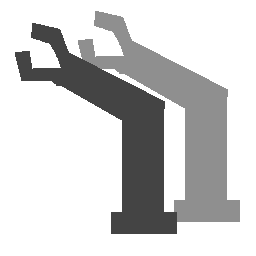
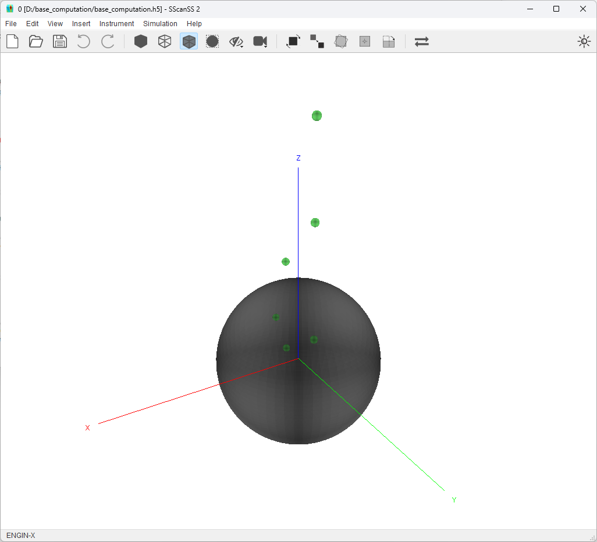
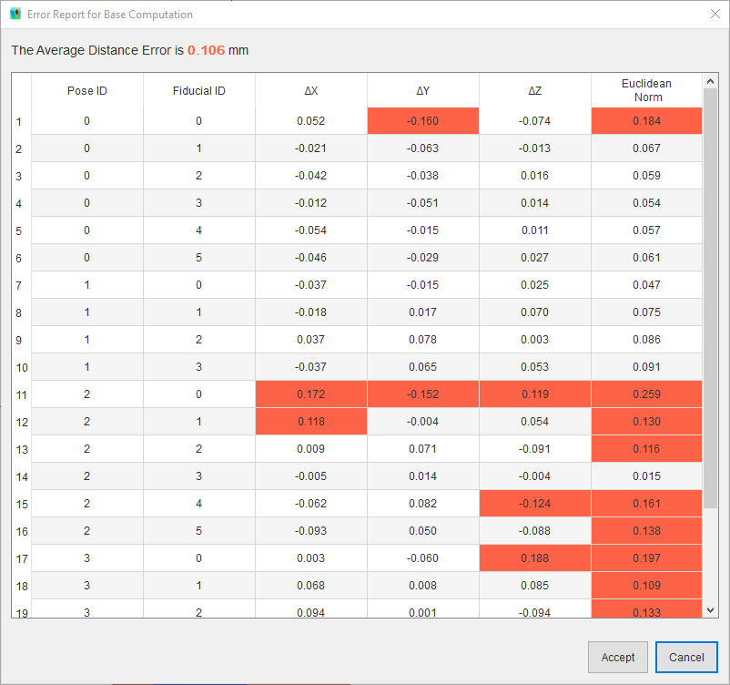
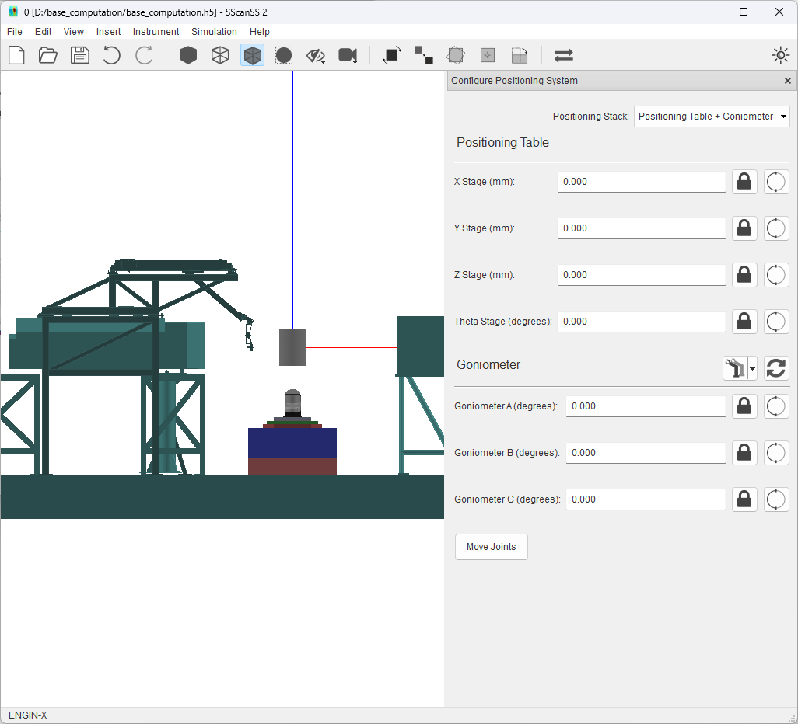

Compute the Base Matrix of a Positioner¶
The positioning system on an instrument can either be a single positioner such as a positioning table or a stack of positioners such a positioning table with a goniometer. When the positioning system is a stack, the first positioner is considered fixed and other positioners are movable i.e. the base matrix of the positioners can be changed so as to adjust the position and/or orientation of the positioner on the preceding one.
The base matrix for a movable positioner in a stack is a transformation matrix that contains the orientation and position of the base of the positioner’s kinematic chain when the other positioners are in their default or zero configuration i.e. all joints at their home positions. This matrix is used to compute the relationship between the movable positioner and the preceding positioner in the kinematic chain.
It is possible to create a repeatable mounting solution for the movable positioner such that the matrix is always the same but this is not realistic for many instruments hence SScanSS 2 provides a method to compute the base matrix using measurements of fiducial points taken at 3 or more varied poses of the movable positioners.
Procedure for Base Computation¶
This section will describe the process of the collecting the measurement and computing the base matrix. The process is as follows:
Mount the movable positioner rigidly in the real-world positioning stack. The positioners in the stack should be set to their default or zero configuration.
Attach the sample with fiducial points rigidly onto the real-world positioning stack.
Select 3 or more joint configurations to move the joints of the movable positioning (it is recommended to uses at least 4 configurations). These configurations should not move the sample in a planar motion (which could lead to wrong results) but in the 3D volume of the workspace. The configurations could be randomly generated using the lower and upper limit for each joint but should be evaluated for safety.
The movable positioner only should be controlled to the selected configurations, at each pose 3 or more fiducial points should be measured and the index of the measured fiducial point should be recorded.
After collecting all the measurements, create a Robot world calibration file (.calib) using the measured fiducials and configuration information.
Open SScanSS 2, import the sample and the fiducial points, then open the Positioning system settings and select the appropriate positioning stack from the drop-down. From the  button menu select the Calculate Base Matrix option, select the created calibration file from the dialog, and accept result if successful.
{kind=link}
Goniometer Example¶
This example will be showing base matrix computation for the Positioning Table + Goniometer stack on the ENGIN-X instrument. Let begin by opening the base_computation.h5 project in the examples/base_computation folder in the install directory. You should see a generic sphere sample and some fiducial points on the sample scene as show below.
{kind=link}
Click on Instrument > Positioning System in the main menu, to open the positioning system setting dialog. Select the Positioning Table + Goniometer stack from the positioning stack drop-down menu. The graphics window should be updated to show the selected positioning system.

Select Calculate Base Matrix from the button menu next to the goniometer title as shown below this should open a file dialog.
{kind=link}
In the file dialog, Select the calibration file (goniometer.calib) from the examples/base_computation folder in the install directory. This calibration file contains measured fiducial points at 4 different configurations for the 3 DOF goniometer on the ENGIN-X instrument. The software will read the file, execute the base matrix computation, and display the error for the computation in the dialog shown below.
{kind=link}
The error report shows the difference between the measured fiducial points and points estimated using the calculated base matrix, and the distance (euclidean norm) between both sets of points. The error report could be used to evaluate which points are contributing most of error so they could be removed or remeasured, it could reveal situations when the sample is moving (i.e. not rigidly mounted), or it could reveal kinematic errors in the robot.
Clicking the Accept button in the error report will apply the new base matrix to the positioning system and the change in position and orientation can be seen in the graphic window. Clicking the Cancel button will discard the computed matrix.